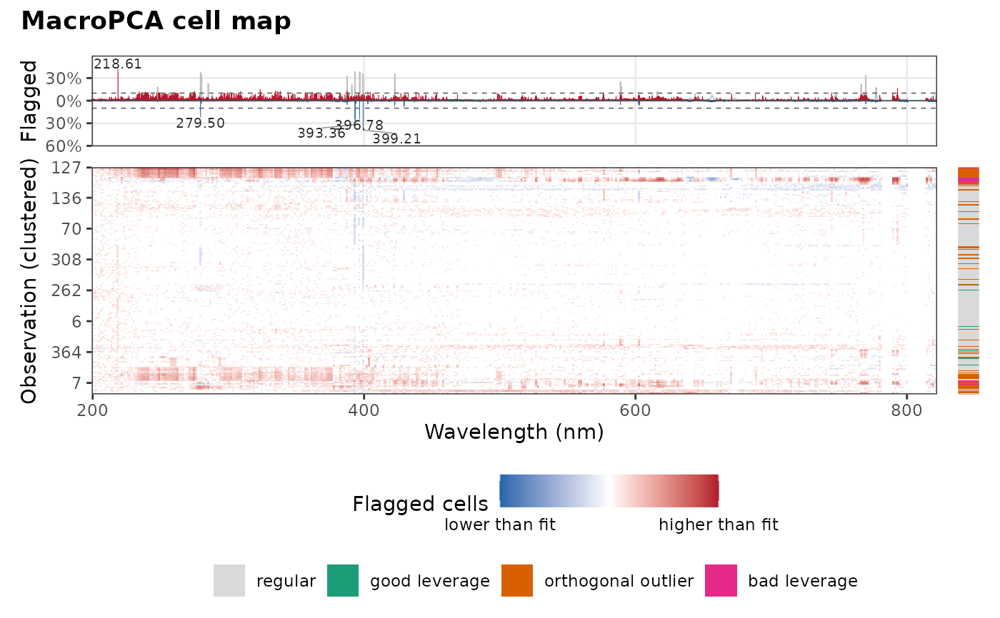

Lists the wavelength regions where many observations have cells flagged
by macropca(): runs of adjacent channels (on the same detector segment)
whose share of flagged observations is at least threshold. These are
the channels that persistently deviate from the PCA fit, for example
emission lines affected by self-absorption, saturation or matrix
effects, and candidates to exclude or down-weight. plot_cell_map()
labels the regions with the largest share.
Usage
flagged_regions(
object,
threshold = 0.1,
rows = NULL,
columns = NULL,
lines = NULL,
tol = 0.1
)Arguments
- object
An object returned by
macropca().- threshold
The share of flagged observations above which channels form a flagged region. Default is 0.1.
- rows, columns
Optional indices or names of the rows and columns to show. Default is all.
- lines
Optional line list returned by
libs_lines(), to label the regions with the emission lines they match.- tol
The largest distance, in nm, between a region and a line it matches. Default is 0.1.
Value
A tibble with one row per region, sorted by decreasing share,
and columns start, end and peak (the wavelength, or variable
number, of the largest share), channels (the number of channels),
share (the largest share of flagged observations), mean_share and
direction. With lines, it also has the columns species and
line_wavelength of the nearest line (NA when none) and
candidates.
Details
Runs separated by at most two channels below the threshold are merged. A
region is "higher" when at least two thirds of its flagged cells are
higher than the fit, "lower" when at most one third are, and "mixed"
otherwise. With lines, the lines between start - tol and end + tol
are the candidates, from the nearest to the peak.
Examples
# \donttest{
minerals <- c("Ca", "Cl", "Cu", "Fe", "Mg", "Mn", "Mo", "P", "K", "Na", "S", "Zn")
set.seed(1)
fit <- forageLIBS |>
dplyr::select(-Measurement, -Sample, -dplyr::all_of(minerals)) |>
macropca(k = 3)
if (requireNamespace("patchwork", quietly = TRUE)) {
plot_cell_map(fit, order = "cluster")
}

flagged_regions(fit)
#> # A tibble: 61 × 7
#> start end peak channels share mean_share direction
#> <dbl> <dbl> <dbl> <int> <dbl> <dbl> <chr>
#> 1 399. 399. 399. 1 0.391 0.391 lower
#> 2 219. 219. 219. 1 0.383 0.383 higher
#> 3 393. 393. 393. 2 0.318 0.281 lower
#> 4 397. 397. 397. 1 0.207 0.207 lower
#> 5 280. 280. 280. 1 0.177 0.177 lower
#> 6 793. 793. 793. 2 0.171 0.148 higher
#> 7 323. 324. 323. 7 0.149 0.0990 higher
#> 8 335. 335. 335. 2 0.130 0.126 higher
#> 9 387. 387. 387. 1 0.130 0.130 higher
#> 10 338. 338. 338. 1 0.128 0.128 higher
#> # ℹ 51 more rows
# }